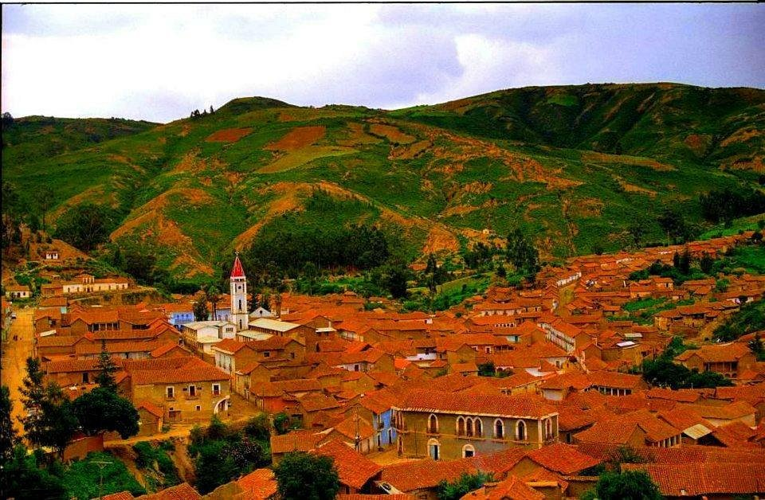

Bienvenido a CochaLove
Descubre los lugares más románticos en Cochabamba para tener citas inolvidables.
Sobre Nosotros
CochaLove es una iniciativa creada con el objetivo de promover los lugares más románticos en Cochabamba para parejas y aventureros que buscan experiencias únicas y memorables. Fundada en 2024, nuestra misión es ser el puente entre los visitantes y los rincones mágicos de Cochabamba, ofreciendo una guía detallada de los mejores lugares para citas y encuentros románticos.
Detrás de CochaLove está un equipo de apasionados por la belleza y el encanto de Cochabamba, comprometidos con compartir el corazón y el alma de nuestra ciudad. Creemos en crear momentos inolvidables, y es nuestra alegría ayudarte a descubrir el lugar perfecto para tu próxima cita.

Parque De La Familia
El Parque de la Familia es un espacio turístico, destinado a la orientación alternativa recreacional, Donde se destaca el espectáculo con 5 fuentes de aguas danzantes las cuales se llaman: fuente de la alegría, fuente de los deseos, fuente de la amistad, túnel de la esperanza, fuente principal y ofrece asombrosos espectáculos de luces y proyecciones en el agua en dos funciones, con chorros de hasta 20 metros sincronizados con la música.
Cristo De La Concordia
El Cristo de la Concordia es una estatua monumental de Jesucristo, ubicada sobre el cerro de San Pedro en la ciudad de Cochabamba, Bolivia, a una altura de 265 m sobre la ciudad. La estatua mide 34,20 m de altura, sobre un pedestal de 6,24 m, con una altura total de 40,44 m. La estatua es ligeramente más pequeña que la estatua de Estatua de Cristo Rey (Świebodzin), 36 m, contando los 2 m de la corona, y es más alta que la estatua de Cristo Rey en Cali (28 m), al igual que la estatua de Cristo Redentor en Río de Janeiro, que tiene 30 m, pero menor al Cristo Protector de Encantado, de 43 m, en el sur de Brasil.
Palacio Los Portales

El Palacio Portales es una joya arquitectónica situada en la pintoresca ciudad de Cochabamba, Bolivia. Construido entre los años 1915 y 1927, este edificio es un testamento de la opulencia y el esplendor de principios del siglo XX, diseñado por el renombrado arquitecto francés Eugene Bliault. Originalmente concebido como la residencia privada de Simón Iturri Patiño, uno de los magnates de la minería más influyentes y acaudalados de Bolivia, el Palacio Portales nunca llegó a ser habitado por su familia, convirtiéndose en un fascinante capítulo de la historia boliviana.
Valle Alto
El Valle Alto es una región agrícola y ganadera de Bolivia, situada en el departamento de Cochabamba. Se encuentra a una altitud de 2.500 msnm y tiene un clima templado. La región es conocida por su producción de frutas y hortalizas, y es uno de los principales proveedores de alimentos de la ciudad de Cochabamba.